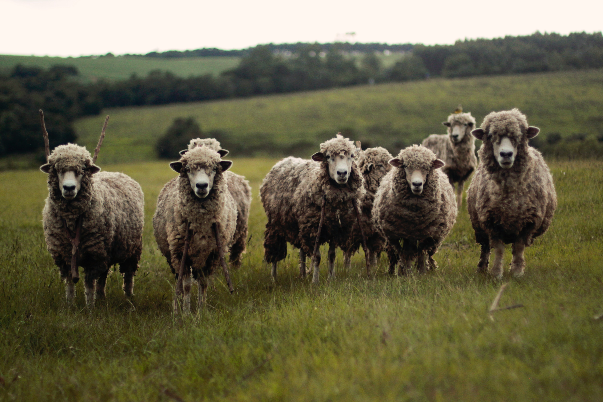

Cervo
da família CervidaeOs cervos, que também são conhecidos como veados, são animais herbívoros e ruminantes que se diferenciam por terem galhadas ao invés de chifres. Nesse artigo, vamos conhecer um pouco sobre essa família, passando por suas características principais, seu modo de viver e mostrando algumas espécies.

Os cervos são animais de pelagem marrom e lisa, com algumas áreas de coloração branca. Além disso, eles também possuem grandes orelhas e pernas longas.

Os cervos são nativos da Ásia, América do Norte e do Sul, Europa e norte da África. Eles foram levados pelos homens para outras regiões do mundo em que não são espécies endêmicas, como Austrália e Nova Zelândia. O veados vivem em uma grande variedade de ambientes, mas sempre perto de locais com água disponível. Os mais comuns são florestas, pantanais, pântanos, desertos e tundras.
Por serem presas muito comuns, tanto entre humanos quanto entre outros animais, os cervos se adaptaram para evitar caçadores. Em alguns casos, como o do cervo canadense, é comum vê-los no meio de estradas. É uma forma de garantir que os caçadores não os acharão.
“Há algo no uivar do lobo que tira um homem do aqui e agora e o transporta para uma floresta da mente.”
- Surgiu: ~ 20.000.000 anos
- Tipo: Mamífero
- Idade Média: 20 anos
- Macho adulto: 110kg
- Fêmea adulta: 90kg
- Família: Cervidae
Existem cervos de tamanhos variados. Alguns possuem cerca de 30 cm de altura, como o cervo Pudu. Já o maior cervo, o Alce, pode chegar a 2,1 m de altura.
O que diferencia os cervos de outros animais ruminantes é o fato deles desenvolverem galhadas ao invés de chifres. Elas são estruturas ósseas, presentes apenas nos machos, que podem quebrar ao longo da vida e crescer novamente.

Leão
da família FelidaeO leão é um animal mamífero felino, vertebrado e carnívoro de grande porte. O seu nome científico é Panthera leo. Conhecido como o Rei da Selva, o leão pode ser encontrado na Ásia, África e Europa.

Os cervos são animais de pelagem marrom e lisa, com algumas áreas de coloração branca. Além disso, eles também possuem grandes orelhas e pernas longas.

A maior parte dos leões que hoje vive na natureza são encontrados nas savanas da África e demais regiões semi-desérticas. Ele já foi extinto de muitas áreas de florestas da Ásia e Europa. Eles vivem em grupos de até 40 indivíduos, sendo em sua maioria fêmeas, lideradas pelo macho alfa. As atividades no grupo são divididas entre os seus integrantes. Enquanto as fêmeas são responsáveis pela caça e cuidam dos filhotes, os machos garantem a proteção do grupo.
Além disso, as suas atividades costumam acontecer ao entardecer. Os leões possuem excelente visão noturna, garantindo que a caça possa ocorrer durante a noite. A comunicação entre os leões é feita através de rugidos, eles servem para a alertar e demarcar o território ocupado. Para se ter uma ideia do seu poder, o rugido pode ser ouvido em até 9 km de distância!
“Há algo no uivar do lobo que tira um homem do aqui e agora e o transporta para uma floresta da mente.”
- Surgiu: 124.000 anos
- Tipo: Mamífero
- Idade Média: 10 - 15 anos
- Macho adulto: 150 - 200kg
- Fêmea adulta: 120 - 185kg
- Família: Felidae
O macho possui uma juba característica e imponente, além de ser bastante peludo. Já a fêmea é de menor porte, bem menos peluda e não apresenta a juba. A coloração da pelagem dos leões varia de amarelo a marrom.
Os leões são animais carnívoros e suas presas mais comuns são as zebras, búfalos, javalis, antílopes e veados. Eles são excelentes predadores e ocupam o topo de suas cadeias alimentares.

Lince
da família FelideosO caracal (Caracal caracal), também conhecido como lince-do-deserto ou lince-persa, é um carnívoro da família dos felídeos habitante da África e da Ásia Menor. Apesar de sua aparência lembrar a de um lince, este gato selvagem é parente próximo do serval. São felinos de porte médio, sendo que em seu habitat são menores do que as panteras (leões e leopardos) e guepardos mas maiores do que os gatos selvagens africanos.

Os cervos são animais de pelagem marrom e lisa, com algumas áreas de coloração branca. Além disso, eles também possuem grandes orelhas e pernas longas.
É um animal de comportamento solitário e hábitos geralmente noturnos. Por ser um caçador que usa táticas de espreita, o lince é bastante silencioso ao caminhar, dificultando ainda mais sua visualização em ambientes naturais.
Em algumas comunidades dos Bálcãs, uma região do sudeste europeu formada por países como Bósnia, Bulgária, Sérvia e Grécia, os linces são considerados “fantasmas”, pelo fato de raramente serem vistos.
“Há algo no uivar do lobo que tira um homem do aqui e agora e o transporta para uma floresta da mente.”
- Surgiu: ~ 7,2 milhões de anos
- Tipo: Mamífero
- Idade Média: 7 anos
- Macho adulto: 6 - 18kg
- Fêmea adulta: 4 - 15kg
- Família: Felidae
Os linces são caçadores ativos e a maioria da suas presas é composta por animais de pequeno porte como roedores, lebres, coelhos e aves. No entanto podem capturar filhotes e espécimes jovens de alces, de javalis e de ibex (uma espécie de cabra montesa).
Geralmente associado à áreas frias, os linces ocorrem em boa parte do hemisfério norte, com representantes tanto na América do Norte, quanto na Europa e Ásia. Atualmente existem quatro espécies de linces.

Touro
da raça HighlandA raça Highland tem vivido há séculos nas ásperas remotas terras altas escocesas. As condições extremamente duras criaram um processo de seleção natural, onde somente os animais mais aptos e mais adaptáveis sobreviveram para continuar a raça..

A pelagem dupla (camada externa grossa longa e camada interna lanosa e macia) é uma das diferenças mais notáveis entre Highlands e outras raças.
Esta “Grande Old Breed” pode ser rastreada até o primeiro livro genealógico sendo publicado em 1885 pela Highland Cattle Society, na Escócia. Evidências arqueológicas da raça Highland remontam ao século VI, com registros escritos existentes a partir do século XII. Os bovinos Highlands têm uma longa história de vida com os humanos. Na antiguidade, os escoceses mantinham as vacas dentro de suas casas durante o inverno.
Bovinos Highland também são encontrados na Escócia, Austrália, Áustria, Canadá, Dinamarca, Estónia, Finlândia, França, Alemanha, Nova Zelândia, Noruega, Suécia e Suíça. Os animais são chamados de gado escocês das montanhas, gado Scotch Highland ou escoceses. Independentemente de onde eles estão localizados hoje, estes animais podem traçar sua ascendência para a Escócia. Importações de animais, embriões e sêmen escoceses, pelos EUA e Canadá têm servido para garantir a continuação da raça na América do Norte.
“Há algo no uivar do lobo que tira um homem do aqui e agora e o transporta para uma floresta da mente.”
- Surgiu: a partir do século XII
- Tipo: Mamífero
- Idade Média: 15 anos
- Macho adulto: 1.000kg
- Fêmea adulta: 800kg
- Família: Bovidae
A pelagem dupla (camada externa grossa longa e camada interna lanosa e macia) é uma das diferenças mais notáveis entre Highlands e outras raças. O revestimento reduz a necessidade de caros celeiros e abrigos. A pelagem, além de vermelha e preta, amarela, dun, branca, tigrada e prata também são consideradas cores tradicionais.
Devido à pelagem dupla, esta raça não precisa de uma pesada camada de gordura subcutânea para o isolamento. Isso permite que este animal, mesmo criado com forragem de baixa qualidade, produz carne magra, com bons níveis de marmoreio, baixo teor de gordura e alta qualidade.

Ovelha
da família BovidaeA ovelha é um mamífero quadrúpede e herbívoro que pertence à família Bovidae e à ordem Artiodactyla. O carneiro é o macho da ovelha, seu filhote recebe o nome de cordeiro. As ovelhas domesticadas estão presentes em quase todos os países, mas as selvagens vivem em áreas restritas, exemplos disto é o carneiro selvagem da América do Norte, chamado de Bighorn.

Acredita-se que as ovelhas foram domesticadas há 11.000 anos, na região que, hoje, é conhecida como Iraque.
As ovelhas são animais gregários, sensíveis e inteligentes. Segundo estudo recente divulgado pela revista Nature, as ovelhas são capazes de distinguir diferentes expressões da face de outros integrantes do rebanho, bem como identificar até 50 componentes do grupo e lembrar-se de acontecimentos ocorridos há dois anos.
As ovelhas domésticas têm desempenhado um papel fundamental para a espécie humana, que utiliza sua lã para fazer roupas e até mesmo tapetes. A carne, seja de animais adultos ou de filhotes, é amplamente consumida, bem como seu leite e os diversos tipos de queijos feitos com ele. Através de seleção artificial, foram obtidas mais de 800 raças de ovelhas domésticas que ocupam as mais diferentes regiões: desde desertos até áreas tropicais úmidas.
“Há algo no uivar do lobo que tira um homem do aqui e agora e o transporta para uma floresta da mente.”
- Surgiu: 9.000 a.c.
- Tipo: Mamífero
- Idade Média: 12 anos
- Macho adulto: 45-160kg
- Fêmea adulta: 45-100kg
- Família: Bovideos
O temperamento desse animal ruminante faz jus a sua fama de fofo e dócil. As ovelhas são muito calmas, com excelente memória e inteligentes, conseguindo até mesmo diferenciar expressões faciais de outros animais do rebanho.
Ademais, apesar do chifre, esses ovinos não possuem mecanismo de ataque. Apesar disso, elas são rápidas e conseguem se adaptar facilmente em condições não muito favoráveis. Um ponto interessante do seu temperamento é que as ovelhas, assim como os humanos, podem ficar estressadas e depressivas.
Abelha
da família ApidaeAs abelhas são animais invertebrados pertencentes ao filo Arthropoda, classe Insecta, ordem Hymenoptera e família Apideae. Atualmente são conhecidas mais de 20.000 espécies de abelhas. Elas podem viver solitárias ou formar colônias com cerca de 80.000 indivíduos.

As abelhas são insetos de grande importância ecológica, sendo responsáveis pela polinização de diversas espécies.
Na cabeça, as abelhas possuem um par de antenas, onde estão localizadas estruturas olfativas – bastante desenvolvidas – e auditivas, que as auxiliam na orientação. Na cabeça também estão presentes três ocelos (olhos simples) na região frontal e dois olhos compostos na região lateral. As peças bucais permitem que a abelha consiga mastigar materiais sólidos, bem como sugar líquidos.
A presença de um par de mandíbulas fortes permite também que elas cortem e manipulem diversos materiais, como a cera e o própolis na construção do ninho. A língua, coberta de pelos, permite, entre outras funções, a coleta do grão de pólen. Além dessas estruturas, na cabeça também estão presentes importantes glândulas, como as mandibulares (ajudam a processar a geleia real).
“Há algo no uivar do lobo que tira um homem do aqui e agora e o transporta para uma floresta da mente.”
- Surgiu: 150.000.000 anos
- Tipo: Inseto
- Idade Média: 45 dias
- Macho adulto: 65mg
- Fêmea adulta: 65mg
- Família: Apidae
No tórax, que é dividido em três segmentos, há um par de pernas em cada um deles. Além de possibilitarem a locomoção, as pernas estão adaptadas para o transporte de pólen. Os grãos de pólen também são transportados presos aos diversos pelos presentes no tórax. Além disso, no tórax também estão localizados dois pares de asas, que permitem o voo, bem como órgãos respiratórios (espiráculos), digestório (esôfago) e glândulas digestórias.
No abdome podemos encontrar diversos órgãos, pertencentes, por exemplo, ao sistema digestório, circulatório e excretor, bem como glândulas produtoras de cera. No abdome também está presente o ferrão, órgão de defesa de operárias e rainhas. O ferrão encontra-se ligado a uma bolsa de veneno, que é injetado na superfície que a abelha pica. Após a picada, na maioria das vezes, esse ferrão fica preso e acaba por levar ao rompimento do abdome e, consequentemente, à morte da abelha, quando ela tenta se soltar.